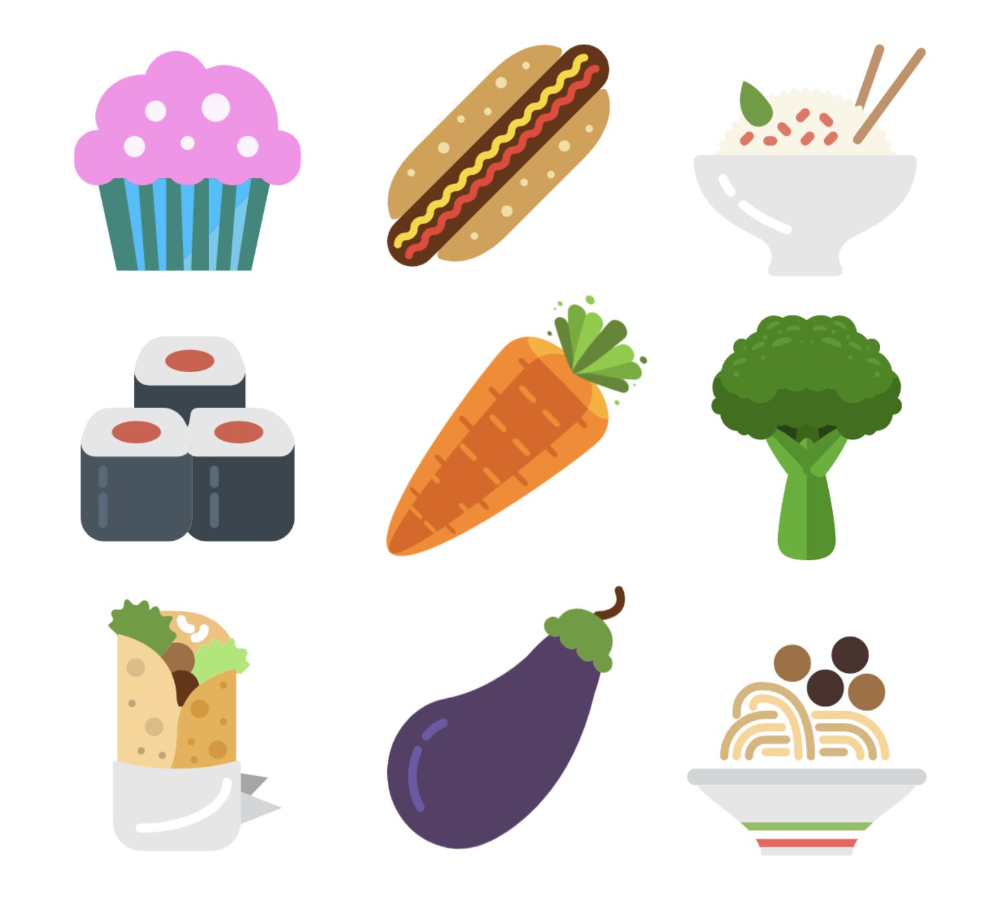
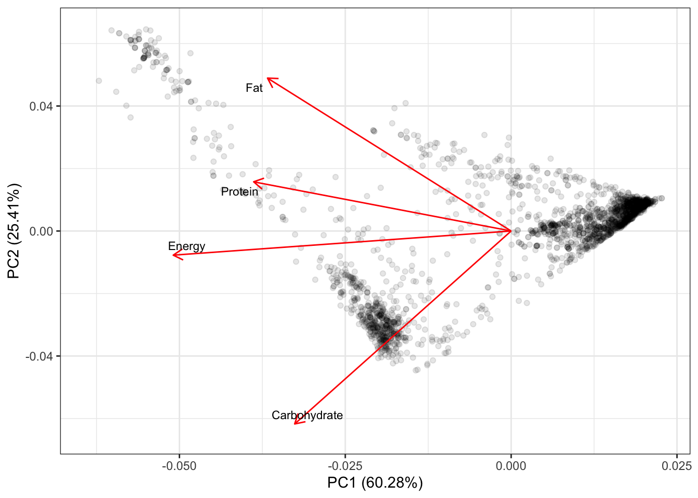
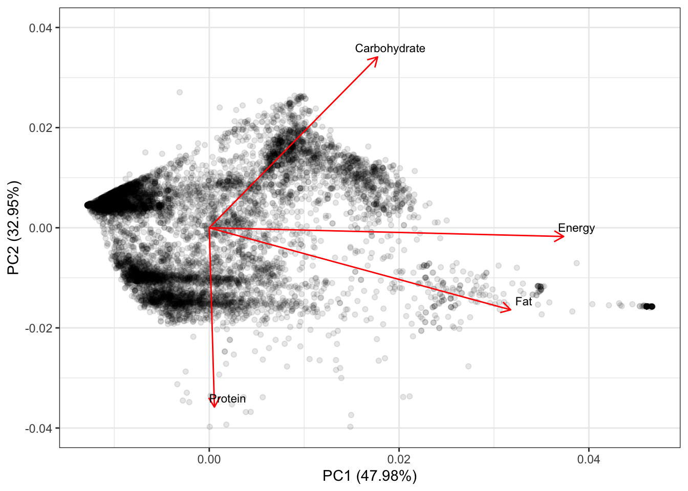

The food nutrient data provided by FoodData Central contains information about nutrients and other components in foods and food products. To explore the different nutrients and energy supplies in vegan and regular diets, I used PCA and biplots to analyze energy level (kcal), protein (g), fat (g), and carbohydrate (g) in vegan and regular foods and food products. I included all food groups for regular diet and “Spices and Herbs”, “Breakfast Cereals”, “Fruits and Fruit Juices”, “Vegetables and Vegetable Products”, “Nut and Seed Products”, “Legumes and Legume Products”, and “Cereal Grains and Pasta” for vegan diet.

Made with logoMakr on Jan. 26, 2020.
# load packages
library(tidyverse)
library(here)
library(janitor)
library(ggfortify)# read in data
nutrient <- read_csv(here("data", "usda_nutrients.csv")) %>%
clean_names()
# vegan food
nutrient_vegan <- nutrient %>%
filter(food_group %in% c("Spices and Herbs", "Breakfast Cereals", "Fruits and Fruit Juices", "Vegetables and Vegetable Products", "Nut and Seed Products", "Legumes and Legume Products", "Cereal Grains and Pasta" )) %>%
select(energy_kcal:carb_g) %>%
rename(Energy = energy_kcal,
Protein = protein_g,
Fat = fat_g,
Carbohydrate = carb_g)# check number of missing
skimr::skim(nutrient_vegan)# pca
# vegan
pca_vegan <- prcomp(nutrient_vegan, scale = TRUE)
sum_vegan <- summary(pca_vegan)
# making biplot
biplot_vegan <- autoplot(pca_vegan,
alpha = 0.1,
loadings.label.size = 3,
loadings.label.colour = "black",
loadings.label = TRUE,
loadings.label.repel = TRUE) +
theme_bw() +
scale_y_continuous(limits = c(-0.065, 0.065))
biplot_vegan
Figure 1: Biplot for main nutrients in vegan foods and food products. The first and second PCs explained 85.69% of the total variance. Energy level is correlated with protein, fat and carbohydrates. Data source: FoodData Central.
# regular food
nutrient_reg <- nutrient %>%
select(energy_kcal:carb_g) %>%
rename(Energy= energy_kcal,
Protein = protein_g,
Fat = fat_g,
Carbohydrate = carb_g)# check number of missing
skimr::skim(nutrient_reg)# regular
pca_reg <- prcomp(nutrient_reg, scale = TRUE)
sum_reg <- summary(pca_reg)
# making biplot
biplot_reg <- autoplot(pca_reg,
alpha = 0.1,
#colour = NA, # point color
loadings.label.size = 3,
loadings.label.colour = "black",
loadings.label = TRUE,
loadings.label.repel = TRUE) +
theme_bw() +
scale_y_continuous(limits = c(-0.04, 0.04))
biplot_reg
Figure 2: Biplot for main nutrients in regular foods and food products. The first and second PCs explained 80.93% of the total variance. Energy level is correlated with fat and carbohydrates but not protein. Data source: FoodData Central.
Energy level of vegan foods and food products is correlated with protein, fat and carbohydrates with protein having the highest correlation (Figure 1).
Energy level of regular foods and food products is correlated with fat and carbohydrates while protein has almost no correlation with energy. Instead, fat had the highest correlation with energy (Figure 2).
Both observatios of vegan and regular foods were clustered and generally laid inside a boundary. The clustering was more apparent for vegan foods than regular foods meaning vegan foods and food products are less diverse in terms of major nurient ingradients.